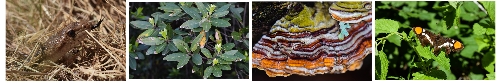
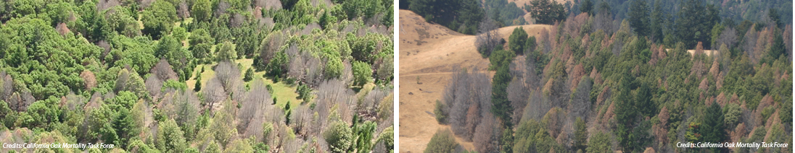
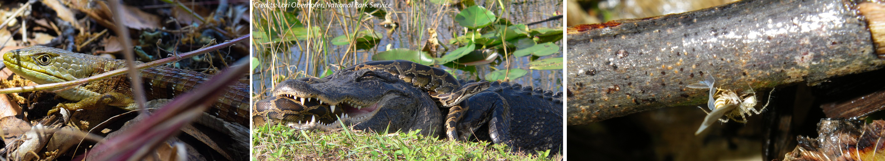
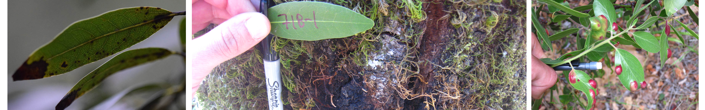

Coffee & Viz:
Collaborative Management of Invasive Species
Using Tangible Landscape
Center for Geospatial Analytics
Francesco Tonini & Douglas Shoemaker
Invasive Species
Increasing number of invasive species worldwide

Environmental Impacts
Habitat alteration

Environmental Impacts
Competition and predation

Economic Impacts
Structural damage

Wildlife & Public Health Impacts
Disease epidemics & parasites

Key Management Issues
Late identification: time to action counts!

Deployment of funding
- Invasive termites in the U.S.: ≈ $750 mi property damage
- In U.S. each year control cost for termites alone $1.5+ billion

Allocation of treatments & what is effective?

Collaborative Management Using Tangible Landscape
Co-learning and collaboration: improve the efficacy of simulated management interventions
- Quickly and intuitively learn dynamics of complex spread models
- Stakeholders virtually placed into the landscape
- Quickly develop & test management strategies
- Receive near-real time feedback

Termite infestation game
Setting
This game is set in Dania Beach, Florida, a neighborhood at risk of invasion by termites. Try to save as many city blocks as possible from infestation with preventative treatment given a limited budget.
Instructions
- Players have a limited treatment budget (10 blocks)
- At the beginning of each round players will see a map of the city and a map of termite habitat
- Then players may place treatment blocks on the game board in order to protect against termites
- The game master runs the termite spread simulation and shows the results
- At the end of each round players will see the animated spread of termites, the budget spent, and the number of city blocks infested
- For new players the game master randomizes the starting locations of the initial termite colonies